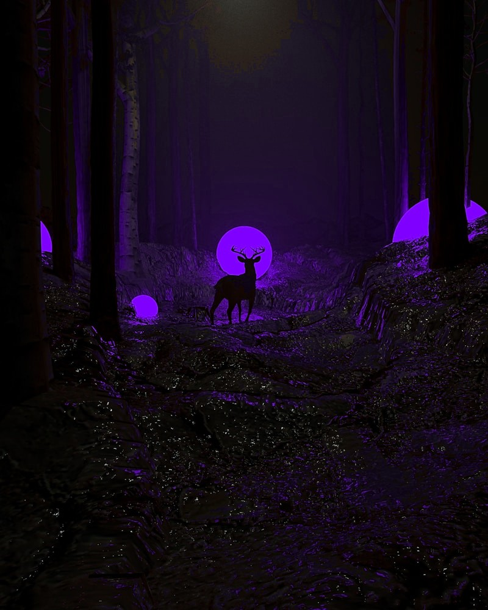

A collection of tools and products built entirely through vibe coding with Claude Code. No traditional development background. Just a designer who identified real problems, scoped the solutions, and shipped them.
Most designers design tools. I build them. Using Claude Code as my development partner, I have shipped functional, production-ready products across multiple disciplines: from financial analysis to social content generation to this portfolio itself. Each project started with a real problem, a clear brief, and a conversation with an AI. What came out the other side was working software.
This is what the next generation of senior design leadership looks like. Not just directing creative output, but having the capability to prototype, build, and deploy digital products independently. The gap between design and development is closing, and these projects are proof of what becomes possible when a designer operates on both sides of it.

This portfolio is the most direct evidence of what expert vibe coding with Claude Code looks like in practice. Every section, every project page, every video embed, animation, layout decision, and interaction was produced through a precise, design-led conversation between my creative direction and Claude.
Knowing how to use Claude Code at this level is a skill in itself. It is not about prompting. It is about knowing exactly what to ask for, understanding when the output is right and when it needs pushing further, applying senior design judgement at every stage, and shaping what comes out into something that looks considered, intentional, and professional. That combination of AI fluency and design expertise is rare, and it is what separates someone who can vibe code from someone who can vibe code well.
The result is a fully responsive, multi-page portfolio with embedded video, animated backgrounds, a custom design system, and a GitHub-to-Netlify deployment pipeline, built in a matter of days. You need someone who knows design deeply to get output like this. Claude Code is the tool. The expertise is mine.
A tool built to streamline social media content production. Input a brief, tone of voice, and target platform, and the tool generates on-brand post copy ready to publish. Built to solve a real workflow problem, the time cost of writing consistent, high-quality social content across multiple channels and brand voices.
A real-time stock analysis tool that pulls live market data and surfaces insights in a clean, readable interface. Built out of personal interest in financial markets and a desire to understand stock performance without navigating bloated financial platforms. Demonstrates that design and product thinking can be applied beyond the traditional creative brief.
Ten years ago, a designer who could also write code was unusual. Today, a designer who can build production software using AI is genuinely rare. These projects are not side experiments. They are evidence of a shift in what a senior designer can do, and should do, when given the right tools.
The ability to go from a problem to a working product, without a developer in the room, changes what is possible in any organisation. It compresses timelines. It reduces dependency. It puts strategic design thinking directly in control of the output, end to end. That is the value I bring alongside the brand, motion, and creative strategy work you have seen in this portfolio.